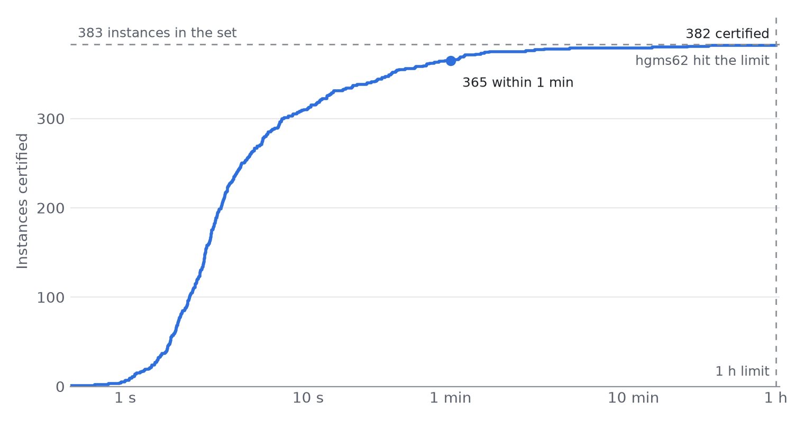

With default settings, Jaddle certified 382 of the 383 LP relaxations in the PDLP papers’ hard MIPLIB 2017 set, to a relative tolerance of 1e-4, on a single laptop GPU. The shifted geometric mean solve time was 6.9 seconds, and half the instances finished in under 3.2 seconds.
Jaddle is a saddle-point solver written entirely in JAX, so it runs unchanged on CPU, GPU and TPU. Its algorithm is explained in the How Jaddle Works post. First-order LP solvers are fast per iteration but have a reputation for being fragile. Some instances stall for thousands of iterations, and the usual fix is per-instance tuning. This article shows that a fixed configuration can clear almost the whole benchmark.
It also looks at the one instance that did not converge, hgms62. It was within a factor of about four of the tolerance when the clock ran out. Changing one setting from its default gets it over the line.
The benchmark set
The test set is the 383 MIPLIB 2017 instances used to evaluate PDLP and cuPDLP, taken from the mip_relaxations_instance_list in FirstOrderLp.jl. Each instance has between 100,000 and 10 million nonzeros. Integrality is dropped, so every instance is solved as a plain LP.
The set is hard for first-order methods for reasons that have little to do with size:
- Wide coefficient ranges. Many instances mix coefficients of 1 with big-M terms of 1e6 or more. Diagonal scaling cannot fully remove this, and it slows Jaddle down a lot.
- Hidden objectives. Some models put the objective in a dense equality row, such as
min zsubject toz = Σ aⱼxⱼ. The real cost structure is then hidden in the constraints, and the primal iterates drift off feasibility. - Degeneracy and long tails. Many relaxations have large optimal faces or near-parallel constraints. Iterates then circle the optimum for a long time before the duality gap closes.
The instances range from 150 to 1.45 million columns and from 36 to 2.95 million rows. One configuration has to handle all of them.
Experiment setup
Every instance ran through the same pipeline with the same solver settings. Nothing was tuned per instance.
| Setting | Value |
|---|---|
| Hardware | One NVIDIA GeForce RTX 5070 Ti Laptop GPU |
| Precision | float64 |
| Solver settings | jl.solve defaults: alternating update, adaptive step size, adaptive restarts, adaptive diagonal scaling with diag_clamp=10 |
| Presolve | HiGHS presolve, then Jaddle’s defined-variable elimination |
| Tolerance | 1e-4, relative, on primal feasibility, dual feasibility and duality gap |
| Residual norm | l2 |
| Time limit | 3,600 seconds per instance |
| Harness | benchmarks/benchmark.py --tol 1e-4 --max-seconds 3600 |
An instance counts as converged when Jaddle returns a full optimality certificate on the presolved LP. All three residuals must be below the tolerance. Jaddle does not stop on a heuristic such as objective stalling.
The headline time is the iteration loop, including the one-off XLA compile on the first epoch. Wall time adds presolve, scaling, setup and postsolve. Unsolved instances count at the full 3,600 seconds in every average, as in the PDLP papers.
Why a tolerance of 1e-4
A relative tolerance of 1e-4 is the “quick and ready” setting. It puts the objective within about 0.01% of optimal, with constraint violations of the same relative size. For many uses that is the answer:
- Planning and what-if runs, where the input data is far less accurate than 1e-4.
- MIP root relaxations and bounds, where a near-optimal dual bound is what matters.
- Warm starts and crossover. A 1e-4 point is close enough to the optimal face that a simplex repair is cheap. On mzzv11, crossover from a 1e-4 point took 125 to 6,077 pivots, against 47,774 for HiGHS’s simplex from a cold start.
First-order methods also slow down as they approach the optimum, so each extra digit costs more than the last. Stopping at 1e-4 keeps the solver where it is fastest. The PDLP papers use 1e-4 as their moderate-accuracy level, which makes the results comparable.
When more accuracy is needed, Jaddle provides tools that start from a 1e-4 solution: feasibility polishing (jl.solve_with_polishing), iterative refinement (jl.solve_with_refinement) and crossover to an exact vertex (jl.crossover).
Presolve: HiGHS plus a Jaddle-specific reduction
Each instance goes through jl.solve_with_presolve with the defined-variable elimination switched on. It runs five steps:
- HiGHS presolve removes redundant rows and columns, fixes variables and tightens bounds.
- Defined-variable elimination, Jaddle’s own reduction, removes dense defining rows that HiGHS keeps.
- Jaddle solves the reduced LP.
- Elimination postsolve recovers the eliminated variables and the duals of their rows.
- HiGHS postsolve maps the primal and dual solution back to the original model.
Presolve is cheap next to the solve. The median presolve time was 0.28 seconds. HiGHS kept a median of 95% of the columns. Presolve also solved one instance outright: neos-787933, with 236,376 columns, which counts as one of the 382.
Why Jaddle needs its own presolve
Standard presolvers are built for simplex and interior-point methods, which factorise matrices. For those methods, fill-in is expensive and a dense row is cheap. Jaddle has the opposite trade-off. It only does matrix-vector products, so extra nonzeros cost little. But some row structures damage the conditioning that decides how fast it converges.
The worst of these is a defined variable: a row a·z + r·x = b that defines z as a combination of other variables. In gmut-* and leo1, z is a zero-cost aggregate whose coefficients mirror the objective. In proteindesign*, z is the objective itself: min z subject to z = Σ aⱼxⱼ. In both cases, the dense row hides the objective structure from the scaling, and the primal iterates drift off feasibility.
HiGHS and SCIP leave these rows alone for three reasons. z is not a column singleton, because inequality rows use it too. It is not free, so substituting it needs an explicit bound row. And substituting a dense row breaks their fill-in limits.
What the elimination does
jaddle.presolve.eliminate_defined_variables substitutes z = E·x + const throughout the model:
- The cost of
zmoves ontox, and any constant goes into the objective offset. - Inequality rows that use
zget the substitution added to them. - Bounds on
zbecome rows onx, unless the bounds onxalready imply them.
The rules are conservative. A zero-cost aggregate row needs at least 100 nonzeros to qualify. An objective row qualifies from 2 nonzeros, because a short objective row hides the objective just as well. z may appear in at most four inequality rows. Total fill-in is capped at the original nonzero count. Later passes follow objective chains only, pushing the cost down onto the decision variables. On radiationm40-10-02, for example, min z, z = 1601 N + T is followed by rows that define N and T.
The postsolve recovers both the eliminated primal values and the duals of the removed rows. The mapped primal-dual pair is exactly as feasible and optimal as the reduced one.
Results
Jaddle certified 382 of 383 instances, and most of them in seconds. Half finished in under 3.2 seconds, 90% in under 25 seconds, and only four needed more than five minutes.

| Outcome | Instances |
|---|---|
| Certified optimal on the presolved LP | 382 / 383 (381 by Jaddle, 1 by presolve) |
| Time limit reached | 1 (hgms62) |
| Errors or numerical failures | 0 |
The table below gives shifted geometric means with a 10-second shift (SGM10), the PDLP papers’ summary statistic. hgms62 counts at 3,600 seconds.
| Time measured | SGM10 | Median, certified instances |
|---|---|---|
| Iteration loop, including first-epoch XLA compile | 6.86 s | 3.19 s |
| Iteration loop, compile amortised out | 4.72 s | 1.29 s |
| Wall clock, including presolve, scaling, setup and postsolve | 9.56 s | 5.11 s |
The median instance needed only 8 epochs. The long tail is short. Apart from hgms62, the slowest instances were snp-02-004-104 at 761 seconds, hgms30 at 1,190 seconds and fhnw-binschedule1 at 1,550 seconds. All three finished well inside the limit.
The gap between the first two rows is compile time. Every new problem shape triggers an XLA compile, which costs one to two seconds. On small instances it is often most of the solve. Jaddle caches compiled programs on disk, so repeat solves of a same-shaped model skip it.
Case study: hgms62, the one that got away
hgms62 is the only instance Jaddle did not certify with default settings. It ran for the full hour, about 2.9 million iterations, and stopped close to the tolerance but not inside it.
The instance
hgms62 has 48,597 columns and 582,237 rows, or 37,235 by 569,830 after presolve. Size is not the problem. It ranks 46th by file size, and rwth-timetable, ten times larger, certified in 10 seconds. Its half-size sibling, hgms30, is telling. It was the second-slowest certified instance, taking 3,869 epochs and 1,190 seconds. The hgms family is hard for Jaddle because of its structure, and hgms62 is about twice the size of hgms30.
The family has a history in Jaddle’s development. On hgms30, an earlier version locked into a single restart cycle for more than 1,250 epochs, with the objective stuck 7% off optimal. That led to the artificial restart rule in the current solver, which forces a restart when a cycle runs too long without progress.
How close it got
When the clock ran out, the postsolved point had these residuals on the original LP:
| Residual | Value at 3,600 s | Tolerance | Ratio to tolerance |
|---|---|---|---|
| Primal feasibility | 9.3e-5 | 1e-4 | 0.9 (met) |
| Dual feasibility | 2.1e-4 | 1e-4 | 2.1 |
| Duality gap | 3.9e-4 | 1e-4 | 3.9 |
The primal was feasible to tolerance. The dual feasibility and the gap were the problem: still converging, but slowly. A 600-second run of an earlier build had left them at 1.7e-2 and 8.5e-2, so the solver was making steady progress, not stalling. It just needed more time than the limit allowed.
The fix: widen the diagonal clamp
The default that matters here is diag_clamp. Jaddle starts from Ruiz and Pock–Chambolle scaling, then adapts a per-coordinate diagonal metric at each restart. Coordinates that drift steadily get larger steps, and coordinates that oscillate get smaller ones. This adaptive scaling is on by default, because it cut the shifted geometric mean solve time on this benchmark by about 18%.
diag_clamp limits how far that adaptation can move each coordinate from the baseline scaling. The default of 10 keeps every scale factor in [1/10, 10]. That is a safe bound across the whole benchmark, but on hgms62 it is too tight. The likely reason is that some coordinates need more rescaling than a factor of 10 allows, so the clamp holds them back.
Raising diag_clamp greatly lets the adaptive metric correct the scaling fully, and hgms62 then converges. Nothing else changes: the same presolve, tolerance and time limit.
import jaddle.jaddle_linear as jl
result = jl.solve_with_presolve(
"hgms62.mps",
eliminate_defined_vars=True, # as in the benchmark
primal_feasibility_tolerance=1e-4,
dual_feasibility_tolerance=1e-4,
dual_gap_tolerance=1e-4,
diag_clamp=1e8, # default 10.0
)With this setting, hgms62 converges in 73.65 seconds.
Why the default stays at 10
A wider clamp is not a free win. The adaptive metric changes the geometry the solver works in, and a loose bound gives it more room to go wrong on other instances. Jaddle’s primal weight shows the same risk: with a wide k_scale clamp and per-epoch updates it ran away on mzzv11, reaching 1e8 with the gap stuck at 0.94. The default is set for the whole benchmark, not for its hardest member.
This is the pattern for a first-order solver: one robust default that handles 382 of 383 instances, and a small set of documented settings for the rare instance that needs more. When a solve stalls, diag_clamp is a good first setting to try. Turning adaptive scaling off with diag_adapt=False is another.
Caveats and reproducing the run
Three points matter when reading these numbers.
- The certificate is on the presolved LP. After HiGHS postsolve, 297 of the 383 points also pass the 1e-4 certificate on the original LP. Postsolve can enlarge a first-order solution’s small dual errors. Presolve can also rescale a problem a lot, which changes what a relative tolerance means. On leo1, presolve folds a row with 1e7 coefficients into the cost, so the objective is right but the original dual test fails. When the original certificate matters, polishing, iterative refinement or crossover can tighten the postsolved point.
- The time limit matters for the hardest few. With a 600-second limit, earlier runs certified 380 of 383. hgms30 and fhnw-binschedule1 need 20 to 26 minutes.
- GPU runs are not bit-for-bit repeatable. The order of scatter-add operations varies, so identical runs can differ by several epochs.
The MPS files are not shipped with Jaddle. Download the 383 instances from the MIPLIB 2017 site into data/, then run from the repository root:
python benchmarks/benchmark.py --tol 1e-4 --max-seconds 3600 --highs-solver none--highs-solver none skips the HiGHS reference solve, which can take longer than Jaddle’s. Add --diag-clamp 1e8 to rerun hgms62 with the wider clamp. The harness and its options are documented in benchmarks/README.md.